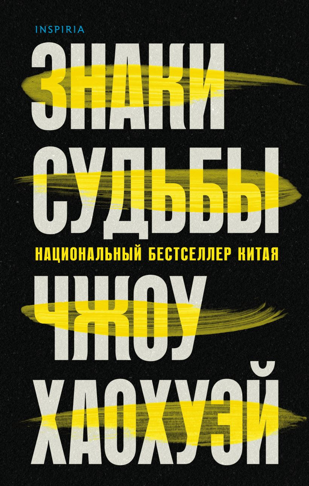

Три девочки и их самая темная тайна… Они поклялись скрывать ужасающую правду до могилы. Это случилось во время учебы в монастырской школе. Тридцать лет назад. До сих пор Бет и Салли вместе пытаются преодолеть травму от содеянного. Кэрол же отдалилась от бывших подруг. Ничего не поделаешь - жизнь. Главное, все они твердо знают: слово их нерушимо, никто ничего не узнает. По иронии судьбы именно тихий безмятежный монастырь навсегда укроет их тяжкий грех во мраке прошлого. Но и тут просчет – некто неизвестный УЖЕ ВСЕ ЗНАЕТ…
Абсолютный бестселлер в Китае. Лучший криминальный роман 2021 года по версии «Sunday Times». ПАЛАЧ МЕРТВ. Всего неделю назад убийца-палач, державший в страхе город Чэнду своими «письмами смерти», казнил сам себя, чтобы избежать ареста. И вот полиция находит тела двух жестоко убитых студентов, непочтительно обращавшихся со своим учителем…--

«Это падение» — красивая и трогательная история о девушке с мрачным прошлым. Восемнадцатилетняя Роу Стэнтон пережила страшную трагедию, о которой знает только ее семья. Последние два года она провела на домашнем обучении, у нее не осталось друзей, и выпускной вечер она видела лишь в кино.
1943 год. Накануне операции под Курском советское командование готовит отвлекающий рейд по тылам противника. Задачу должен выполнить механизированный корпус генерала Максимова. Накануне операции наши разведчики перехватывают контейнер с немецкими документами, подготовленными на имя Максимова. Что это — умелая провокация или генерал действительно предатель? Разобраться в ситуации поручено группе СМЕРШ майора Ивана Бурова. Оперативники прибывают на место в тот момент, когда странным образом из окружения опального генерала исчезают несколько офицеров… И вот тогда спокойной жизни ждать не стоит, ни ему самому.
Единственный писатель в истории, дважды подряд получивший одну из главных остросюжетных литературных наград – премию Эдгара Аллана По.
Продано более 2 500 000 книг автора на 30 языках в 70 странах мира
Он прошел войну и стал героем, пережив много лишений и страха. Но настоящий кошмар ожидал его дома…
Симона Арнштедт — писательница-феминистка, которая уверена в том, что женщина не обязана следовать общепринятым стандартам поведения и выглядеть словно модель с глянцевой обложки. Она воплощает свои убеждения в романе «Все или ничего», словно ставит себя на место главной героини.